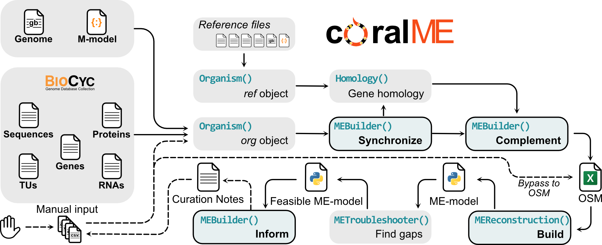

3. Arquitecture of coralME
coralME is composed of 4 main classes that process and exchange organism-specific information for the reconstruction of a ME-model. The classes are:
class Organism()
class MEBuilder()
class MEReconstruction()
class Homology()

3.1. Organism()
Role: Store information about an organism
This class acts as a database containing all necessary information to reconstruct a ME-model. It is used to retrieve and store information of the main (org) and the reference (ref) organisms. Information in Organism() is read and manipulated by methods in the MEBuilder() class. The reference can be set as any of the provided organisms in coralME, available here, although we advise to choose E. coli and B. subtilis for gram-negative and gram-positive bacteria, respectively.
3.1.1. Parameters
org:str
Identifier of the main organism. Has to be the same as the containing folder name.
is_reference : bool
If True, process as reference organism.
3.2. MEBuilder()
Role: Coordinate the roles of other classes.
This class acts as the main coordinator between other objects, e.g. Organism, Homology, MEProcesser, and METroubleshooter. It contains methods to manipulate class Organism by using attributes in class Homology, and manually curated files in the folder containing the main organism. Moreover, it is called by objects to access stored information in other objects.
3.3. MEReconstruction()
Role: Reconstruct a ME-model from the information contained in class Organism.
This class was based almost entirely from the original ECOLIme code in build_me_model.py. Adaptations to this code were necessary to make it applicable to other organisms.
3.3.1. Parameters
builder : coralme.reconstruction.MEBuilder
MEBuilder object containing the final version of the class Organism.
3.4. Homology()
Role: Generate and store information about homology of the main and reference organisms.
This class contains methods to predict and process homology of the main and reference organisms. Homology is inferred from the reciprocal best hits of a BLAST. The results are used to update and complement the attributes of the class Organism.
3.4.1. Parameters
org : str
Identifier of the main organism. Has to be the same as its
containing folder name.
ref : str
Identifier of the reference organism. Has to be the same as
its containing folder name.
evalue : float
E-value cutoff to call enzyme homologs from the BLAST. Two
reciprocal best hits are considered homologs if their
E-value is less than this parameter.